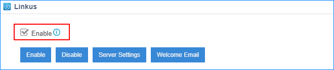
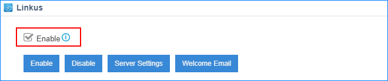

Set up Linkus Server
Before users can log in Linkus clients, you should enable the Linkus server.
Enable Linkus Server
- Log in the PBX web interface, go to Linkus, check the option
Enable.

- On the pop-up dialog, click Yes to confirm.
Before users can log in Linkus clients, you should enable the Linkus server.
